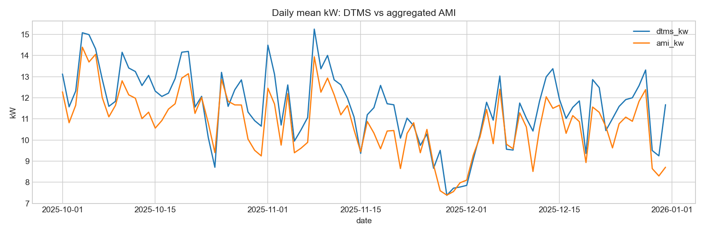
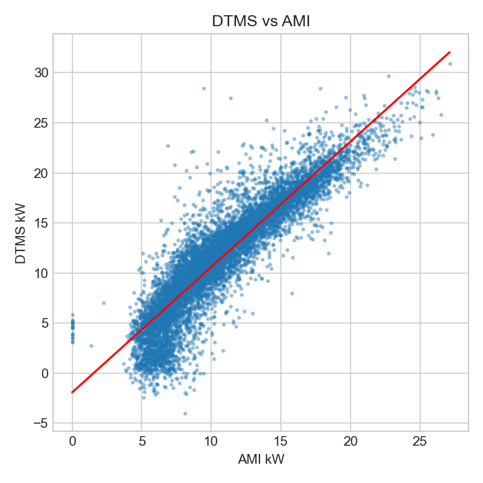
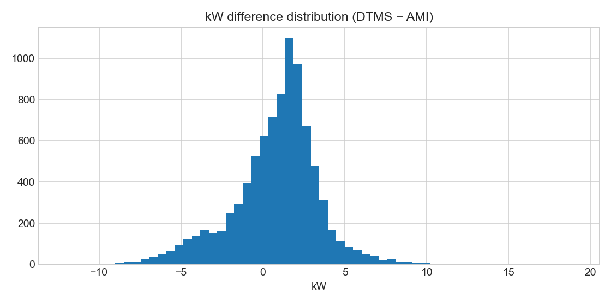
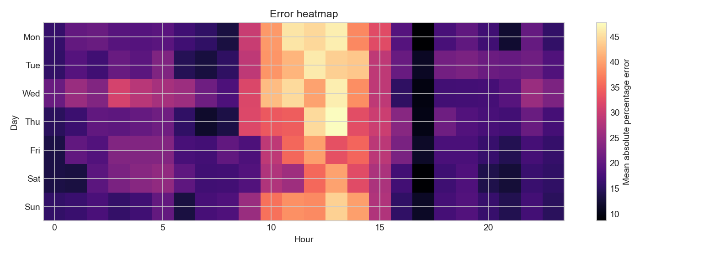

Conditional analysis: timestamps and transformer mapping were reconstructed because they are absent from source parquet files.
| period | intervals | mae_kw | rmse_kw | mape_pct | bias_kw | median_error_kw | p95_abs_error_kw | max_error_kw | min_error_kw | correlation | r2 |
|---|---|---|---|---|---|---|---|---|---|---|---|
| Overall | 8814 | 2.173 | 2.767 | 23.274 | 0.800 | 1.202 | 5.508 | 18.992 | -12.126 | 0.905 | 0.542 |
| 2025-10 | 2976 | 1.765 | 2.213 | 17.013 | 0.820 | 1.118 | 4.180 | 9.895 | -12.126 | 0.936 | 0.737 |
| 2025-11 | 2862 | 2.024 | 2.531 | 22.424 | 0.805 | 1.284 | 4.994 | 10.605 | -10.395 | 0.910 | 0.587 |
| 2025-12 | 2976 | 2.724 | 3.407 | 30.354 | 0.775 | 1.206 | 6.543 | 18.992 | -10.040 | 0.880 | 0.218 |



